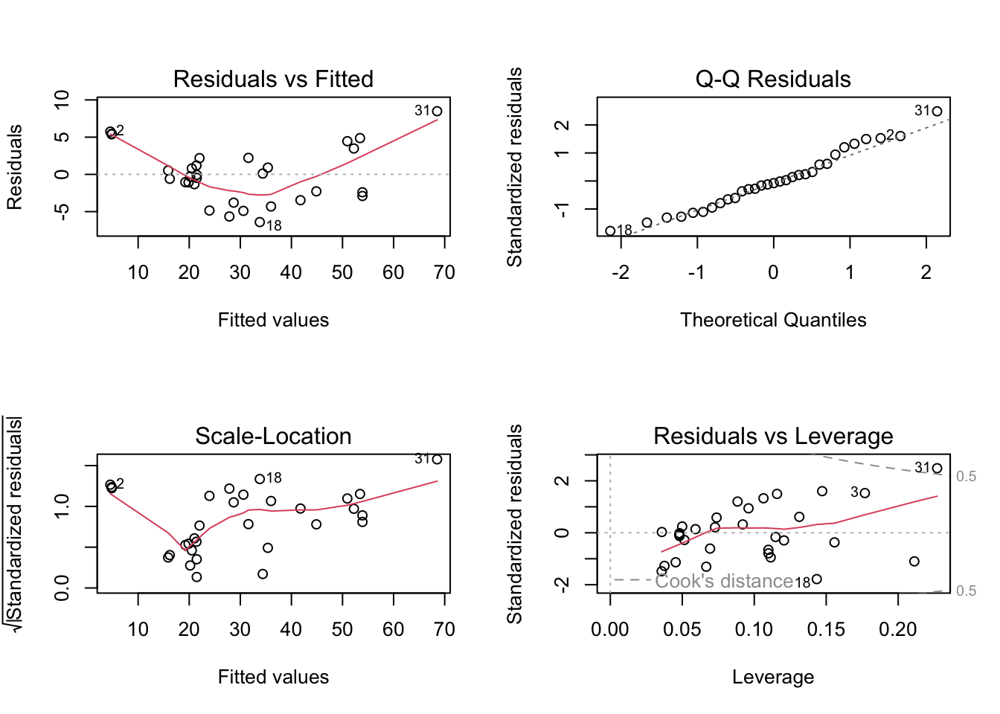
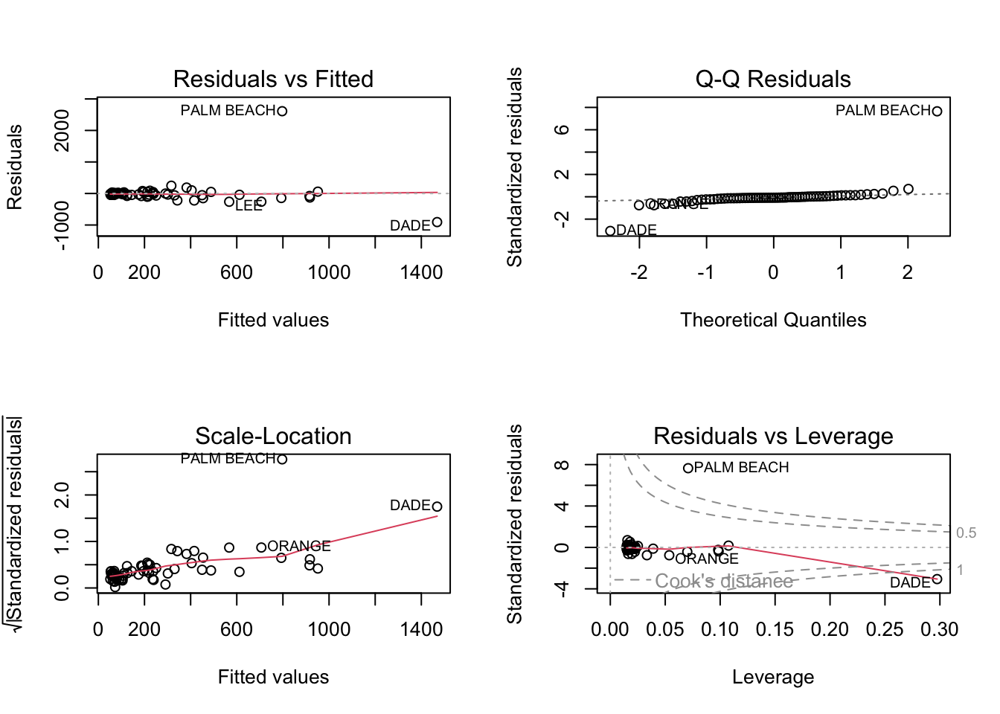
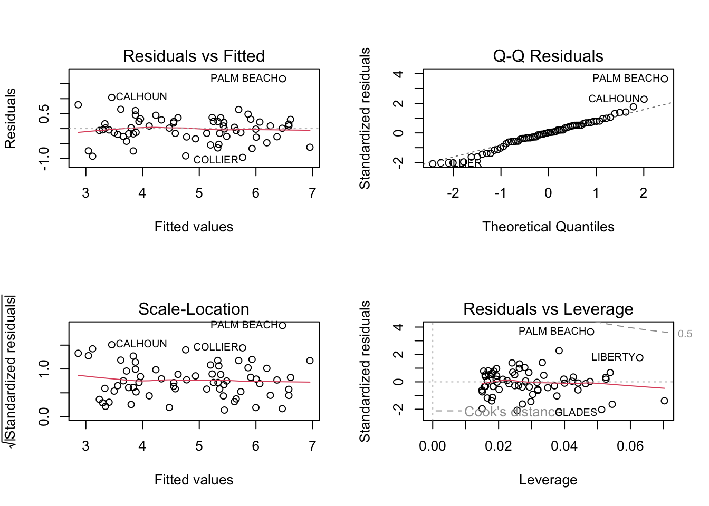

library(alr4)
library(smss)
library(ggplot2)
library(dplyr)
library(leaps)
library(MASS)
library(olsrr)Homework-5
Question 1
data(house.selling.price.2)
model1 <- lm(P ~ S + Be + Ba + New, data = house.selling.price.2)
summary(model1)
Call:
lm(formula = P ~ S + Be + Ba + New, data = house.selling.price.2)
Residuals:
Min 1Q Median 3Q Max
-36.212 -9.546 1.277 9.406 71.953
Coefficients:
Estimate Std. Error t value Pr(>|t|)
(Intercept) -41.795 12.104 -3.453 0.000855 ***
S 64.761 5.630 11.504 < 2e-16 ***
Be -2.766 3.960 -0.698 0.486763
Ba 19.203 5.650 3.399 0.001019 **
New 18.984 3.873 4.902 4.3e-06 ***
---
Signif. codes: 0 '***' 0.001 '**' 0.01 '*' 0.05 '.' 0.1 ' ' 1
Residual standard error: 16.36 on 88 degrees of freedom
Multiple R-squared: 0.8689, Adjusted R-squared: 0.8629
F-statistic: 145.8 on 4 and 88 DF, p-value: < 2.2e-16A. For backward elimination, which variable would be deleted first? Why?
Answer:
Beds would be deleted first. In backward elimination, we remove the least significant variable (highest p-value) first. Beds has a p-value of 0.487, which is much higher than any other variable in the model. This suggests it is not contributing meaningfully to the prediction of house price when controlling for the other variables.
B. For forward selection, which variable would be added first? Why?
Answer:
Size would be added first. In forward selection, we add the variable with the strongest univariate relationship (lowest p-value or highest absolute correlation with the outcome) first. Since Size has the smallest p-value (essentially 0) and highest t-statistic (11.504), it is the most strongly associated with house price.
C. Why do you think that BEDS has such a large P-value in the multiple regression model, even though it has a substantial correlation with PRICE?
Answer:
The reason is multicollinearity. Beds is correlated with other predictors, especially Size and possibly Baths. When Beds is included alongside Size and Baths, its unique contribution to predicting Price is minimal, because much of the variation in Price that Beds explains is already being accounted for by these other variables. Therefore, in the multiple regression context, its p-value is high, indicating it’s not adding unique predictive value.
D. Using software with these four predictors, find the model that would be selected using each criterion:
- R2
- Adjusted R2
- PRESS
- AIC
- BIC
# Fit all subset models
all_models <- regsubsets(P ~ S + Be + Ba + New, data = house.selling.price.2, nbest = 1, nvmax = 4)
summary_all <- summary(all_models)# View R² and adjusted R²
summary_all$rsq[1] 0.8078660 0.8483699 0.8681361 0.8688630summary_all$adjr2[1] 0.8057546 0.8450003 0.8636912 0.8629022# AIC and BIC for each model using stepwise selection
full_model <- lm(P ~ S + Be + Ba + New, data = house.selling.price.2)
# AIC
stepAIC(full_model, direction = "both", k = 2)Start: AIC=524.7
P ~ S + Be + Ba + New
Df Sum of Sq RSS AIC
- Be 1 131 23684 523.21
<none> 23553 524.70
- Ba 1 3092 26645 534.17
- New 1 6432 29985 545.15
- S 1 35419 58972 608.06
Step: AIC=523.21
P ~ S + Ba + New
Df Sum of Sq RSS AIC
<none> 23684 523.21
+ Be 1 131 23553 524.70
- Ba 1 3550 27234 534.20
- New 1 6349 30033 543.30
- S 1 54898 78582 632.75
Call:
lm(formula = P ~ S + Ba + New, data = house.selling.price.2)
Coefficients:
(Intercept) S Ba New
-47.99 62.26 20.07 18.37 # BIC
stepAIC(full_model, direction = "both", k = log(nrow(house.selling.price.2)))Start: AIC=537.36
P ~ S + Be + Ba + New
Df Sum of Sq RSS AIC
- Be 1 131 23684 533.34
<none> 23553 537.36
- Ba 1 3092 26645 544.30
- New 1 6432 29985 555.28
- S 1 35419 58972 618.19
Step: AIC=533.34
P ~ S + Ba + New
Df Sum of Sq RSS AIC
<none> 23684 533.34
+ Be 1 131 23553 537.36
- Ba 1 3550 27234 541.80
- New 1 6349 30033 550.90
- S 1 54898 78582 640.35
Call:
lm(formula = P ~ S + Ba + New, data = house.selling.price.2)
Coefficients:
(Intercept) S Ba New
-47.99 62.26 20.07 18.37 # PRESS (Prediction Residual Error Sum of Squares)
ols_press(full_model)[1] 28390.22E. Explain which model you prefer and why.
Answer:
I prefer the model P ~ S + Ba + New. Although the full model has a slightly higher R², the simpler model has better values across all other criteria: lower AIC, BIC, and PRESS, and nearly identical adjusted R². The variable Beds adds little value, so excluding it results in a more parsimonious model that likely generalizes better to new data.
Reasoning:
1. Adjusted R² is nearly the same as the full model, indicating this model explains most of the variability without overfitting.
2. AIC and BIC are both lower for this model compared to the full model – suggesting better out-of-sample performance and parsimony.
3. PRESS is lowest – meaning this model likely generalizes better to unseen data.
4. “Beds” (Be) contributes very little (low t-statistic, high p-value) and increases complexity without much gain, so removing it improves model simplicity and fit.
Question 2
A. Fit a multiple regression model
data(trees)
model_trees <- lm(Volume ~ Girth + Height, data = trees)
summary(model_trees)
Call:
lm(formula = Volume ~ Girth + Height, data = trees)
Residuals:
Min 1Q Median 3Q Max
-6.4065 -2.6493 -0.2876 2.2003 8.4847
Coefficients:
Estimate Std. Error t value Pr(>|t|)
(Intercept) -57.9877 8.6382 -6.713 2.75e-07 ***
Girth 4.7082 0.2643 17.816 < 2e-16 ***
Height 0.3393 0.1302 2.607 0.0145 *
---
Signif. codes: 0 '***' 0.001 '**' 0.01 '*' 0.05 '.' 0.1 ' ' 1
Residual standard error: 3.882 on 28 degrees of freedom
Multiple R-squared: 0.948, Adjusted R-squared: 0.9442
F-statistic: 255 on 2 and 28 DF, p-value: < 2.2e-16B. Regression Model Diagnostic Plots
par(mfrow = c(2, 2))
plot(model_trees)
Here, 1. Residuals vs Fitted Plot: This plot should show a random scatter of residuals around the horizontal line. However, there is a slight curve, especially at the lower and higher fitted values, indicating potential non-linearity. This suggests that the linear relationship may not fully capture the structure in the data—possibly a transformation of variables (e.g., log or polynomial) might improve the model.
2. Normal Q-Q Plot: The points mostly follow the diagonal line, though there is some deviation at the tails, particularly for points like 31. This indicates minor deviations from normality, but overall it is not severe.
3. Scale-Location Plot (Homoscedasticity Check): This plot should have a horizontal line with points spread equally. Here, the red line shows a slight upward trend, suggesting mild heteroscedasticity—variance of residuals may be increasing with fitted values. It’s not extremely strong, but it’s worth noting.
4. Residuals vs Leverage Plot: This plot helps identify influential observations. Observation 31 stands out with high leverage and moderately large residuals. However, none of the points exceed Cook’s distance thresholds (0.5 or 1), so while some influence is present, no extreme outliers dominate the model.
Question 3
A
data(florida)
model1 <- lm(Buchanan ~ Bush, data = florida)
summary(model1)
Call:
lm(formula = Buchanan ~ Bush, data = florida)
Residuals:
Min 1Q Median 3Q Max
-907.50 -46.10 -29.19 12.26 2610.19
Coefficients:
Estimate Std. Error t value Pr(>|t|)
(Intercept) 4.529e+01 5.448e+01 0.831 0.409
Bush 4.917e-03 7.644e-04 6.432 1.73e-08 ***
---
Signif. codes: 0 '***' 0.001 '**' 0.01 '*' 0.05 '.' 0.1 ' ' 1
Residual standard error: 353.9 on 65 degrees of freedom
Multiple R-squared: 0.3889, Adjusted R-squared: 0.3795
F-statistic: 41.37 on 1 and 65 DF, p-value: 1.727e-08par(mfrow = c(2, 2))
plot(model1)
Yes, Palm Beach County is clearly an outlier in the simple linear regression model where Buchanan votes are regressed on Bush votes.
Interpreting the plots:
1. Residuals vs Fitted Plot: Palm Beach shows an unusually large positive residual, indicating the model significantly underpredicts the Buchanan votes for that county. This suggests an anomaly relative to the overall trend.
2. Q-Q Plot: The residual for Palm Beach deviates substantially from the theoretical quantile line, signaling a violation of the normality assumption due to this extreme observation.
3. Scale-Location Plot: The standardized residual for Palm Beach stands out, suggesting non-constant variance (heteroscedasticity) caused largely by this observation.
4. Residuals vs Leverage Plot: Palm Beach has high leverage and an extreme standardized residual, which gives it a large Cook’s distance—placing it well above the 0.5 and even 1.0 influence thresholds. This confirms it’s a highly influential point in the model.
Palm Beach County is an influential outlier, both statistically and visually, as it significantly impacts the regression results and violates key assumptions of linear regression. This supports the hypothesis that an irregular event (like the butterfly ballot design) may have distorted the voting outcome in that county.
B
model2 <- lm(log(Buchanan) ~ log(Bush), data = florida)
summary(model2)
Call:
lm(formula = log(Buchanan) ~ log(Bush), data = florida)
Residuals:
Min 1Q Median 3Q Max
-0.96075 -0.25949 0.01282 0.23826 1.66564
Coefficients:
Estimate Std. Error t value Pr(>|t|)
(Intercept) -2.57712 0.38919 -6.622 8.04e-09 ***
log(Bush) 0.75772 0.03936 19.251 < 2e-16 ***
---
Signif. codes: 0 '***' 0.001 '**' 0.01 '*' 0.05 '.' 0.1 ' ' 1
Residual standard error: 0.4673 on 65 degrees of freedom
Multiple R-squared: 0.8508, Adjusted R-squared: 0.8485
F-statistic: 370.6 on 1 and 65 DF, p-value: < 2.2e-16par(mfrow = c(2, 2))
plot(model2)
After applying a log-transformation to both the Bush vote and Buchanan vote variables, the regression diagnostic plots show a marked improvement in meeting the assumptions of linear regression. Palm Beach County, which previously appeared as a clear outlier with high residuals and leverage, now exhibits a much more moderate influence. In the Residuals vs Fitted plot, the residual for Palm Beach is still slightly elevated but no longer extreme. The Q-Q plot indicates that the standardized residuals are closer to a normal distribution, and Palm Beach’s point is less of an outlier compared to the untransformed model. The Scale-Location plot also shows more uniform variance across fitted values, suggesting improved homoscedasticity. Furthermore, in the Residuals vs Leverage plot, Palm Beach has lower leverage and Cook’s distance, indicating reduced influence on the model. Overall, the log-transformation has improved the model fit and reduced the prominence of Palm Beach as an outlier, suggesting that the previous issues were due in part to non-linear scaling in the original data. Thus, my findings change, Palm Beach is no longer a severe outlier in the log-transformed model, indicating that the original issue was likely due to non-linear scaling, which the log transformation helps correct.